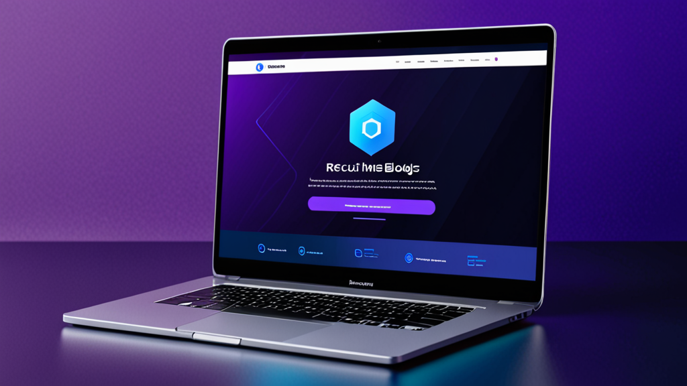

Melhores Ferramentas de Resposta com IA para Mensagens de Recrutamento: Guia do Recrutador para um Contato Mais Inteligente
Se você já passou mais de dez minutos digitando uma mensagem personalizada no LinkedIn para um candidato passivo, conhece bem a dificuldade. Você quer que soe humano, que faça referência à experiência específica da pessoa e inclua a chamada para ação certa — sem acidentalmente colocar o nome da empresa errada.
As melhores ferramentas de resposta com IA para mensagens de recrutamento resolvem exatamente esse problema. Elas ajudam a criar um contato que parece pessoal, e não um modelo genérico. Mas nem todas as ferramentas funcionam da mesma forma, e saber usá-las com eficácia faz toda a diferença entre soar como um robô e soar como um recrutador que realmente fez o dever de casa.
Este guia aborda o que procurar em um assistente de IA para recrutadores, como usá-lo sem perder sua voz e dicas práticas para melhorar suas taxas de resposta.
Por Que Recrutadores Precisam de uma Forma Melhor de Escrever Mensagens
Recrutadores enviam dezenas — às vezes centenas — de mensagens toda semana. Cada uma exige mudança de contexto: revisar o perfil do candidato, verificar a descrição da vaga e criar uma mensagem que se destaque em uma caixa de entrada lotada.
O resultado? Muitos recrutadores recorrem a modelos genéricos. Os candidatos percebem isso na hora. De acordo com dados do LinkedIn, as taxas de resposta do InMail giram em torno de 20 a 25% — e esse número cai significativamente quando a mensagem parece produzida em massa.
Um gerador de mensagens para recrutador não apenas economiza tempo. Ele ajuda a manter a qualidade em grande volume. Quando você pode gerar um rascunho que inclui o cargo do candidato, o setor e um detalhe relevante do perfil, suas chances de obter uma resposta aumentam.
O Que Torna as Melhores Ferramentas de Resposta com IA para Mensagens de Recrutamento?
Nem toda ferramenta de escrita com IA é feita para recrutamento. Antes de escolher uma, veja o que considerar:
1. Consciência de Contexto
A ferramenta deve entender quem você é, quem é o candidato e qual vaga você está recrutando. Chatbots genéricos de IA que não levam o contexto em conta produzem rascunhos vagos e inutilizáveis.
2. Controle de Tom
Você precisa ter a capacidade de ajustar o tom — de profissional e formal a casual e direto. Uma ferramenta de contato com candidatos que só escreve em um estilo não funcionará para diferentes cargos e setores.
3. Integração com Plataformas
As melhores ferramentas funcionam onde você já opera: LinkedIn Recruiter, Greenhouse, Lever, Workday. Ter que copiar e colar entre abas anula o propósito da automação.
4. Privacidade e Controle
Você nunca deve se preocupar com a exposição da sua chave de API ou com o envio automático de mensagens. As melhores ferramentas de resposta com IA para mensagens de recrutamento dão a você controle total sobre o que é enviado e mantêm seus dados localmente.
Como Usar um Assistente de IA para Recrutadores Sem Parecer com IA
Mesmo a melhor ferramenta pode produzir um resultado artificial se você não a orientar. Veja como manter um toque humano:
Comece com um Prompt Forte
Não clique apenas em "gerar". Alimente a ferramenta com detalhes específicos:
- Cargo e empresa atuais do candidato
- Um projeto ou conquista específica do perfil
- Por que esta vaga é relevante para a carreira deles
Exemplo de prompt:
"Escreva uma mensagem curta no LinkedIn para um Senior Product Manager no Spotify. Mencione o trabalho deles em personalização de recursos. A vaga é para Product Lead em uma fintech Série B. Tom: amigável, mas profissional."
Edite o Resultado
Sempre leia o rascunho antes de enviar. Remova quaisquer frases que pareçam artificiais. Adicione uma pergunta ou observação pessoal que só você notaria. A IA é um ponto de partida — sua voz finaliza a mensagem.
Use Modelos Diferentes para Etapas Diferentes
Uma mensagem de contato inicial não deve soar como uma carta de rejeição. Um assistente de IA para recrutadores deve permitir que você alterne entre:
- Contato inicial
- Follow-up (se não houver resposta)
- Convite para entrevista
- Rejeição ou atualização
Cada etapa exige um tom e um nível de detalhe diferentes.
Exemplos Práticos: Antes e Depois da Assistência de IA
Vamos ver cenários reais onde uma ferramenta de IA melhora a mensagem.
Contato Inicial
Antes (modelo genérico):
"Olá [Nome], vi seu perfil e acho que você seria uma ótima opção para uma vaga na nossa empresa. Me avise se tiver interesse."
Depois (com assistente de IA para recrutador):
"Olá Sarah, seu trabalho com retenção de usuários na HubSpot me chamou a atenção — especialmente a campanha que reduziu o churn em 12%. Estamos montando um time de crescimento similar em uma empresa Série A e poderíamos usar sua expertise. Aberta a um bate-papo rápido esta semana?"
A segunda mensagem faz referência ao trabalho específico, mostra pesquisa e faz uma pergunta clara. Essa é a diferença entre ser deletado e receber uma resposta.
Follow-up
Antes:
"Só fazendo um follow-up da minha mensagem anterior. Me avise se tiver interesse."
Depois:
"Olá Sarah — sei que você está ocupada, então vou ser breve. Se o momento não for ideal, sem problemas. Mas se tiver curiosidade sobre a vaga, adoraria compartilhar mais detalhes. De qualquer forma, agradeço por considerar."
Este follow-up reconhece o tempo do candidato e remove a pressão, o que muitas vezes leva a uma resposta.
Dicas para Melhores Taxas de Resposta de Candidatos
Usar as melhores ferramentas de resposta com IA para mensagens de recrutamento é apenas parte da equação. Aqui estão estratégias adicionais para melhorar seu contato:
Personalize Além do Perfil
Mencione algo de uma postagem recente, uma conexão em comum ou uma conferência que participaram. A IA nem sempre capta essas nuances — adicione-as manualmente.
Seja Breve
Candidatos leem mensagens no celular. Mire em no máximo 3 a 5 frases. Se o rascunho da IA for mais longo, corte.
Inclua um Pedido de Baixo Esforço
Em vez de "Podemos agendar uma ligação?", tente "Fico feliz em compartilhar a descrição da vaga se tiver curiosidade." Menor compromisso = maior resposta.
Use uma Linha de Assunto Clara (para E-mail)
Se você usa um ATS como Greenhouse ou Lever, sua mensagem pode cair na caixa de entrada deles. Use uma linha de assunto como "Pergunta rápida sobre sua experiência na [Empresa]" — não "Oportunidade de emprego."
Por Que a Automação no Recrutamento Ainda Deve Ser Humana
Alguns recrutadores temem que usar IA os torne menos autênticos. O oposto é verdadeiro. Quando você automatiza as partes repetitivas da escrita, libera energia mental para as partes que importam: ler o perfil do candidato, pensar sobre o encaixe dele e construir rapport.
Uma ferramenta de automação de recrutamento deve cuidar da digitação, não do pensamento. As melhores ferramentas respeitam esse limite.
Escolhendo a Ferramenta Certa para Seu Fluxo de Trabalho
Se você está avaliando opções, considere como a ferramenta se encaixa na sua rotina diária. Você passa a maior parte do tempo no LinkedIn Recruiter? Ou vive dentro de um ATS como Workday ou Lever? As melhores ferramentas de resposta com IA para mensagens de recrutamento se integram perfeitamente ao seu fluxo de trabalho existente, não como um aplicativo separado que você precisa lembrar de abrir.
Considere também a segurança. Se sua organização lida com dados sensíveis de candidatos, você precisa de uma ferramenta que processe informações localmente e não armazene mensagens em servidores externos. Um design focado em privacidade é mais importante do que recursos chamativos.
Uma ferramenta que atende a esses requisitos é o RecruitReply AI — ele funciona dentro do LinkedIn Recruiter e das principais plataformas de ATS, usa IA no dispositivo e nunca envia mensagens automaticamente. Mas independentemente da ferramenta que você escolher, os princípios deste guia se aplicam.
Considerações Finais
As melhores ferramentas de resposta com IA para mensagens de recrutamento não substituem recrutadores. Elas eliminam atritos. Quando você consegue gerar um rascunho personalizado e com som humano em segundos, envia mensagens melhores, com mais consistência e menos esforço.
Isso leva a taxas de resposta mais altas, melhores relacionamentos com candidatos e mais tempo para as partes estratégicas do recrutamento que realmente importam.
Se você está pronto para experimentar uma ferramenta que respeita seu fluxo de trabalho e a privacidade dos seus candidatos, confira o RecruitReply AI. Ele foi criado para recrutadores que querem escrever mensagens melhores — mais rápido — sem perder a própria voz.